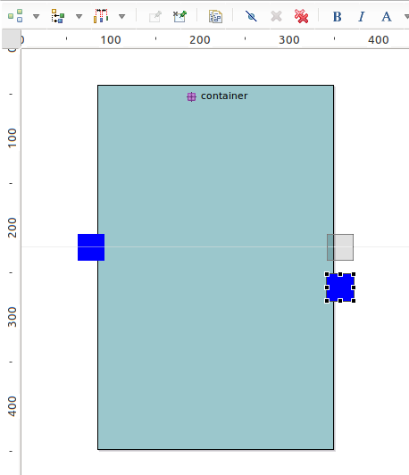
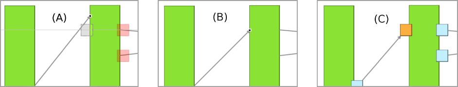
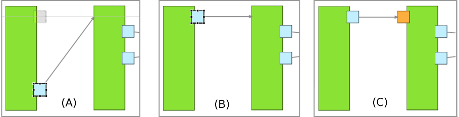

Summary: Allow the «Snap To Shapes» feature on border nodes.
| Version | Status | Date | Authors | Changes |
|---|---|---|---|---|
| v0.1 | DRAFT | 2016-03-24 | lredor | Initial version. |
| v0.2 | PROPOSAL | 2016-04-14 | lredor | Initial version. |
Relevant tickets :
As explained in specification of bug 463485, the Snap To Shapes feature is not operational when moving or resizing a border node. . The goal of this feature is to make operational the Snap To Shapes feature even on border nodes, and also to benefit of the same feature as bug 463485 (ie «snap to all shapes», and not only snap to brothers). You can see specification of bug 463485 for details about «snap to all shapes» feature.
The
Snap To Shapes feature is natively not supported by GMF. Probably because the interest is limited. It allows only to snap to another border node on the opposite side:

But with the option to «snap to all shapes» (with F4 shortcut key), this feature becomes interesting even for border nodes. To align «in» border node with «out» border node for example:
To avoid too many snap guides, only center guides (horizontal and vertical) will be considered. Indeed, generally, the border nodes are small and the main goal of this feature is to align the center of border nodes. So contrary to other shapes where the guides are for bottom, center and top, or left, middle and right. Only center and middle guides are used for border nodes.
The border node can be collapsed (with a filter for example). In this case:
For example in the below screenshot:

Another example with a snap of a normal border node to a collapsed one:

As a reminder (See Sequence diagram introduction, the snap features (snap to grid or snap to shapes) are disabled in sequence diagrams. This will obviously also the case for border nodes even with this improvement.
The
SiriusDragEditPartsTrackerEx has the responsibility to find the correct
SnapHelper according to the «targetUnderMouse» (in
org.eclipse.gef.tools.DragEditPartsTracker.setTargetEditPart(EditPart)).
When moving a border node, the «targetUnderMouse» is an
AbstractDiagramNodeEditPart (parent is a Node) or an
AbstractDNodeContainerCompartmentEditPart (parent is a container).
The policy that displays the feedback (guide line) is
SiriusSnapFeedbackPolicy.
The
SiriusSnapToGeometry is responsible to compute the element to snap with (and so x and y coordinates to snap with).
No metamodel changes.
All the changes will be mainly internal to the edit part and associated policies. So there will be no API changes for this feature.
No user interface change.
This new behavior should be added in the New and Noteworthy documentation.
The limitation "
This feature is not enabled on border nodes." in the diagram documentation should be removed.
The class
org.eclipse.sirius.tests.swtbot.SnapAllShapesTest must be completed with border nodes cases:
For the case of collapsed border nodes, it would be interesting to snap the expanded bounds (and not the collapsed state). But the «snap to» mechanism is generic to all kind of nodes and associated to the figure representing the node. It would be too impacting to try to manage the expanded state.